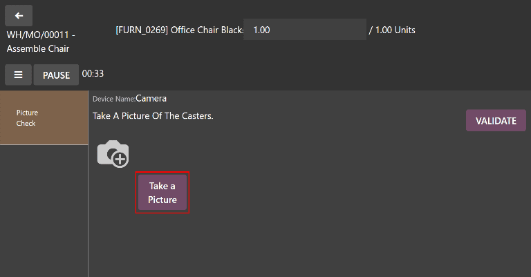

Control de calidad tipo tomar una foto¶
En la aplicación Calidad de Odoo, Tomar una foto es uno de los tipos de control de calidad que se pueden seleccionar al crear un nuevo control de calidad o punto de control de calidad. El tipo de control Tomar una foto requiere que se adjunte una foto al control, la cual luego puede ser revisada por un equipo de calidad.
Crear el control de calidad “Tomar una foto”¶
Hay dos formas en las que se puede crear un punto de control de calidad tipo Tomar una foto. Puede crear un control de calidad de manera manual, o puede configurar un punto de control de calidad para crear controles de manera predeterminada en un intervalo establecido.
En esta documentación solo se detallan las opciones de configuración únicas a los controles y puntos de control de calidad tipo Tomar una foto. Si desea obtener un resumen completo de todas las opciones de configuración disponibles al crear un control de calidad o puntos de control de calidad, consulte la documentación sobre controles de calidad y puntos de control de calidad <quality/quality_management/quality-checks.
Control de calidad¶
Si desea crear un solo control de calidad tipo Tomar una foto, vaya a y haga clic en Nuevo. Complete el nuevo formulario de control de calidad como se indica aquí:
En el campo desplegable Tipo seleccione Tomar una foto.
En el campo desplegable Equipo seleccione el equipo de control de calidad responsable por este control.
En el campo de texto Instrucciones de la pestaña Notas escriba las instrucciones para tomar la foto.

Punto de control de calidad¶
Si desea crear un punto de control de calidad que genere controles de calidad tipo Tomar una foto de forma automática, vaya a , y haga clic en Nuevo. Complete el formulario del nuevo punto de control de calidad como se muestra a continuación:
En el campo desplegable Tipo seleccione Tomar una foto.
Si tiene instalada la aplicación Mantenimiento, verá el campo dispositivo después de seleccionar Tomar una foto. Utilice este campo para especificar un dispositivo que se debe utilizar para tomar fotografías de control de calidad. Si desea obtener más información sobre cómo gestionar dispositivos en la aplicación Mantenimiento, consulte la documentación sobre añadir nuevo equipo.
En el campo desplegable Equipo seleccione al equipo de calidad responsable de gestionar los controles creados por el punto de control de calidad.
En el campo de texto Instrucciones explique cómo se deben tomar las fotos.

Procesar un control de calidad tipo Tomar una foto¶
Hay muchas maneras en las que podemos procesar los controles de calidad tipo Tomar una foto. Si asignamos un control de calidad a una orden de fabricación, inventario o trabajo específico, el control de calidad se puede procesar directamente en la orden. También es posible procesar un control de calidad desde la página del control de calidad.
Desde la página de controles¶
Si desea procesar un control de calidad tipo tomar foto vaya a y seleccione un control de calidad. Siga las instrucciones para realizar la medida.
Después de tomar la fotografía, asegúrese de que esté almacenada en el dispositivo que está utilizando para realizar el control de calidad (computadora, tableta, etc.). Luego, haga clic en el botón ✏️ (lápiz) en la sección de Imagen para abrir el administrador de archivos del dispositivo. Busque la imagen en el administrador de archivos, selecciónela y haga clic en Abrir para adjuntarla.

En una orden¶
Para procesar un control de calidad de tipo Tomar una foto seleccione una orden de fabricación o de inventario (recibo, entrega, devolución, etc.) que deba pasar por un control. Vaya a para seleccionar las órdenes de fabricación y luego haga clic en una. Para seleccionar una orden de inventario vaya a , haga clic en el botón # por procesar que se encuentra en la tarjeta de operación y seleccione una orden.
En la orden de inventario o de fabricación seleccionada aparecerá un botón morado de Controles de calidad en la parte superior de la página. Haga clic en el botón para abrir la ventana emergente de Control de calidad, lo que mostrará todos los controles de calidad que se requieren para esa orden.
Siga las instrucciones detalladas sobre cómo tomar la fotografía que aparecen en la ventana emergente Control de calidad. Después de tomar la fotografía, asegúrese de que esté almacenada en el dispositivo que está utilizando para realizar el control de calidad (computadora, tableta, etc.).
Haga clic en el botón Tomar una foto en la sección de Imagen para abrir el administrador de archivos del dispositivo. Busque la imagen en el administrador de archivos, selecciónela y haga clic en Abrir para adjuntarla. Por último, haga clic en Validar en la ventana emergente Control de calidad.

Si necesita crear una alerta de calidad, haga clic en el botón Alerta de calidad que está ubicado en la parte superior de la orden de fabricación o de inventario después de validar el control de calidad. Al hacer clic en Alerta de calidad se desplegará un formulario de alerta de calidad en una nueva página. Para revisar la guía completa sobre cómo completar los formularios de alerta de calidad, consulte la documentación relacionada a las alertas de calidad.
En una orden de trabajo¶
Al configurar un punto de control de calidad que se activa durante la fabricación, también puede especificar una orden de trabajo en el campo Operación de orden de trabajo del formulario del punto de control de calidad. Si especifica una orden de trabajo, se creará un control de calidad de tipo Tomar una foto para esa orden de trabajo, no para toda la orden de fabricación.
Los controles de calidad de tipo Tomar una foto que cre√≥ para las √≥rdenes de trabajo se deben completar desde la vista de tableta. Vaya a y seleccione una orden de fabricaci√≥n que incluya una orden de trabajo que necesite un control de calidad. Para abrir la vista de tableta haga clic en el bot√≥n üì± (tableta) en la l√≠nea de la orden.
Una vez que tenga la vista de tableta abierta, complete los pasos enumerados en el lado izquierdo de la pantalla hasta que llegue al paso Tomar una foto del control de calidad. Al llegar al control, siga las instrucciones que aparecerán en la parte superior de la pantalla, estas describen el proceso para tomar la fotografía.
Después de tomar la fotografía, asegúrese de que esté almacenada en el dispositivo que está utilizando para procesar la orden de trabajo (computadora, tableta, etc.). Luego, haga clic en el botón Tomar una foto para abrir el administrador de archivos del dispositivo. Busque la imagen en el administrador de archivos, selecciónela y haga clic en Abrir para adjuntarla. Por último, haga clic en Validar para completar el control de calidad.
Si necesita crear una alerta de calidad, haga clic en el botón ☰ (tres líneas horizontales) en la vista de tableta y seleccione Alerta de calidad en la ventana emergente Menú. Aparecerá la ventana emergente Alertas de calidad, allí puede crear una alerta de calidad. PPara revisar la guía completa sobre cómo completar los formularios de alerta de calidad, consulte la documentación relacionada a las alertas de calidad.
Revisar una imagen adjunta a un control de calidad¶
Los miembros del equipo de control de calidad u otros usuarios pueden revisar una fotografía adjunta al control de calidad. Vaya a y seleccione un control.
La fotografía adjunta aparece en la sección Imagen del formulario del control de calidad. Después de revisar la imagen, haga clic en el botón Aprueba si el control es exitoso o en el botón Falla si el control es erróneo.